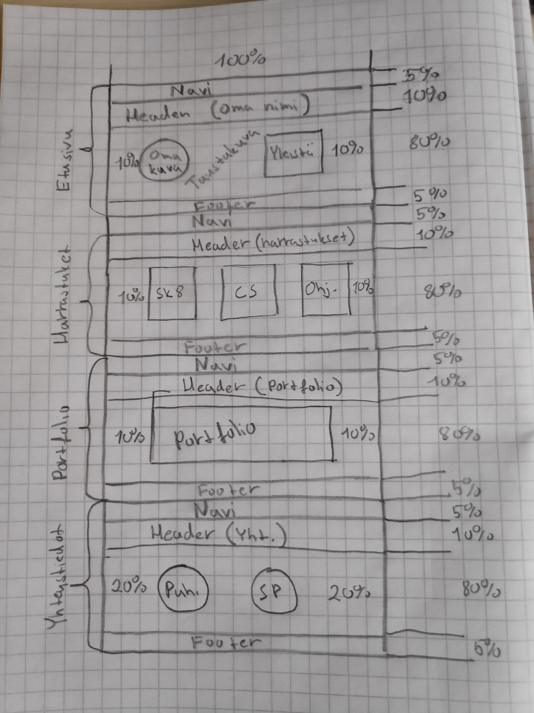
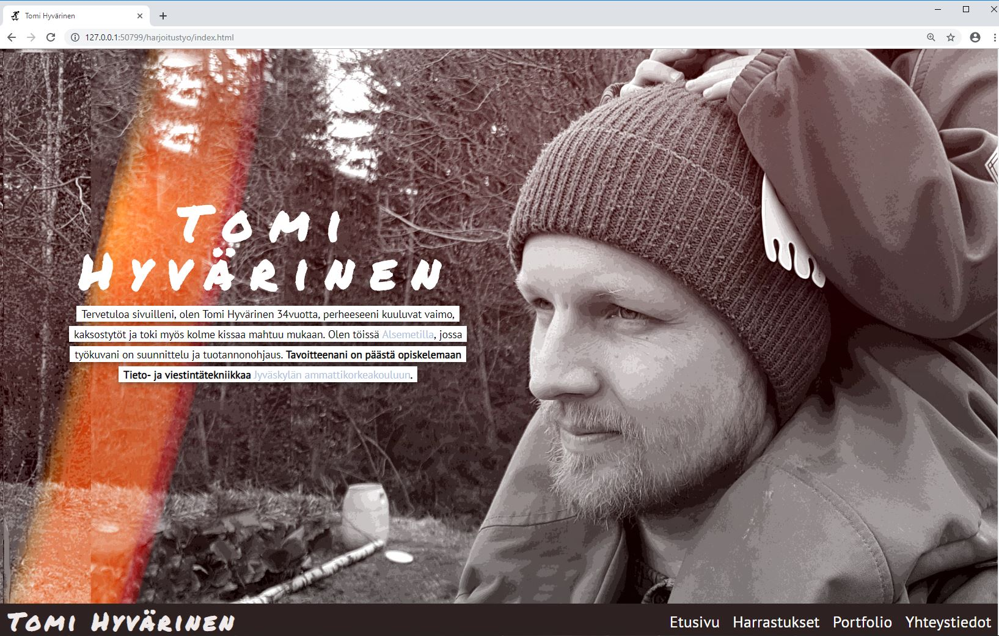

Henkilökohtainen sivusto, portfolio. Tehdään ajatellen tulevaa työnantajaa, joten sivuston täytyy kuvata hyvin minua ja osaamistani.
Käyttäjäryhmä, kuka katsoo sivujani ja milloin? Mitä pitäisi huomioida sivuja suunnitellessa tulevan työnantajan näkökulmasta:
Tietokoneelle suunniteltu, näytön koko huomioitava. Skaalautuva, toimittava puhelimilla/tabletilla. Tulevaisuudessa voisi tehdä täysin responsiivisen ulkoasun.
N. 4-8 eri sivua, alustavasti rakennekaavion mukaan
Jamk, student-palvelin
Ei ole salattavaa tietoa
Alkuperäinen suunnitelma
Lopputulos
Harjoitustyötähän tuli mietittyä melkein koko kurssin ajan, viimeiset 3 viikkoa tuli katsottua Youtube videoita ja erilaisia layoutteja, jotta saisi hyviä ideoita harjoitustyöhön: hyvä esimerkki on hero-image johon olen erittain tyytyväinen.
Alkuperäinen rakennekaaviohan muuttui heti harjoitustyön alettua, koska halusin hero-imagen tähän - siksi päädyin yhden sivun työhön. Layoutin tein paperille, jossa sitä olisi helppo muuttaa, lisätä uusia ideoita nopeasti ja hahmottaa miten joku uusi asia sopisi kokonaisuuteen, joten aluperäinen layoutti muuttui matkalla jonkin verran.
Kun aloitin harjoitustyön oli vaikeaa miettiä mistä aloittaa. Loppujen lopuksi kun aloitti ja teki sivu kerralla loppuun asti niin rupesi homma sujumaan. Ensimmäinen ja isoin haaste oli navigaation tekemisessä: halusin sen olevan ensimmäisellä sivulla alapalkissa ja kun sivua rullaisi alaspäin navigaatio-palkki jäisi ylälaitaan ja tulisi loppuun asti mukana. Loppujen lopuksi sain tämänkin, monien tuntien taistelun jälkeen, toimimaan. Harmittamaan tässä vain jäi kun en saanut aktiivisen sivun palkkia toimimaan, näyttäen millä sivulla ollaan menossa. Navigaation takia jouduin myös tekemään sivut 100vh korkeiksi, muuten en saanut navigaatiota toimimaan - tämä myös aiheutti aika lailla ongelmia skaalauksessa. Muuten kaikki sujui aikalailla suunnitellun aikataulun mukaan.
Virheet ja korjaukset kirjoitin myös paperille ja numeroin järjestykseen, näin oli helppo seurailla/korjailla missä mennään kiireellisyys-järjestyksessä.
Harjoitustyö oli haastavaa ja mukavaa hommaa, sitä tuli mietittyä niin töissä kuin kotonakin ja aina kun uusi idea tuli, niin odotti vain että pääsee testaamaan tätä. Toki välillä oli myös semmoisia hetkiä että näinköhän tämä ikinä valmistuu.
Haastavuutta harjoitustyöhön toi varsinkin se, kun en ollut aikasemmin tehnyt mitään html/css:llä. Lopputulokseen olen varsin tyytyväinen, toki aina on kehittämistä ja aika loppuu kesken, mutta niinhän se aina menee. Mutta todella positiivinen kokemus tämä oli, ja loi taas uutta näkökulmaa alan eri osa-alueeseen.
Kaiken kaikkiaan aikaa kului noin. 80h.
Kokonaisarvosanaksi antaisin itselleni 36p/40p.